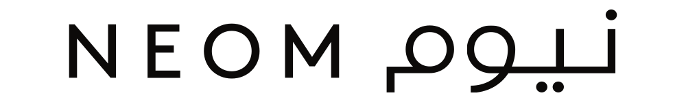
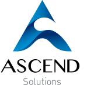
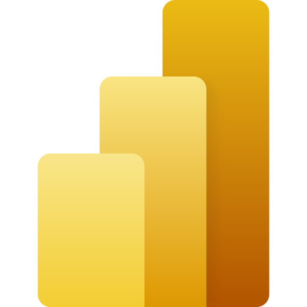
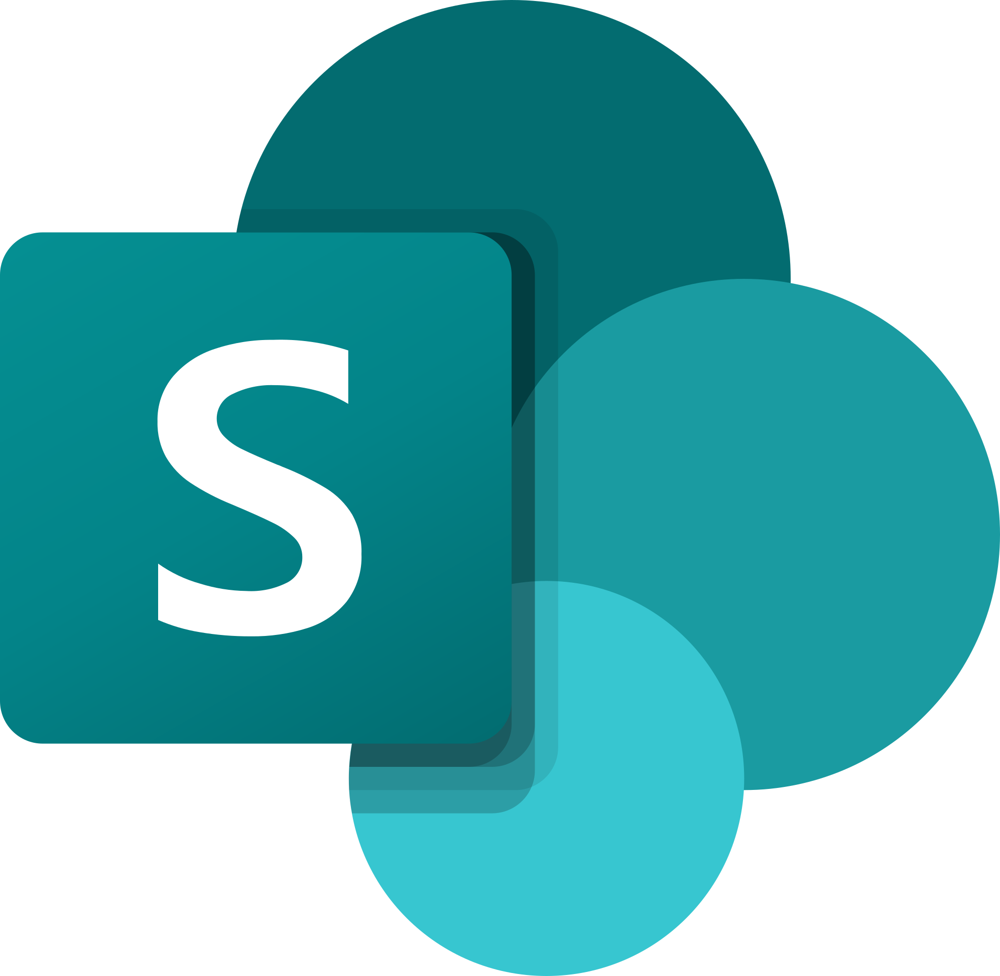
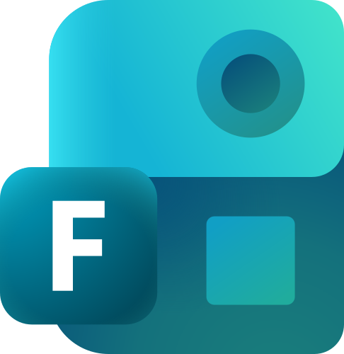
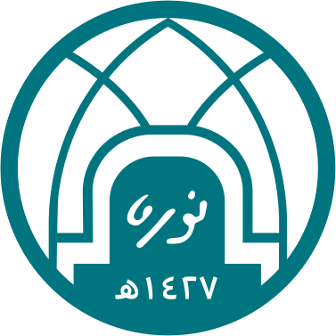
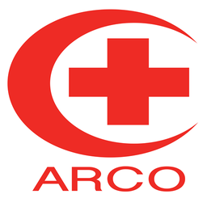

DeckAnonymized exemplar
Target operating model
How the organization will work to deliver the plan
Sahab Soubih سَحاب sahab, noun. Arabic for clouds.
Business consultant
5.5 years inside the organizations building Vision 2030: a giga-project, a government health transformation, a global mega-event, PIF portfolio companies and a greenfield Vision 2030 initiative. I work best in the gap between a strategy on paper and an organization that has to run it: pinpointing what holds the plan back, building the engine that gets it moving, and handing it over so it keeps running.
The work
How the organization will work to deliver the plan
From strategic objectives to a single funded baseline
Stage gates and reporting across project, portfolio and initiative levels
From 217,760 data points to a prioritized set of interventions
A change network of 2,000+ and the plan that keeps it moving
Leaving the client able to run it without you
Options, trade-offs and a recommendation, on one page first
Also delivered, not on the shelf: a strategic risk management framework with its tools and templates, a competitive intelligence and market research framework, a KPI target-setting methodology, and a technology demand-management intake route.
Expertise
Annual operating plans, business-plan cascades, KPI frameworks and the governance that keeps a plan live through the year.
Lifecycles, stage gates, reporting and demand management across project, portfolio and initiative levels.
Stakeholder diagnostics at scale, change networks, communications and the adoption measures that show whether any of it worked.
Decision packs, pre-reads and CEO-tailored operating models for the top of the organization.
Across all four I work with AI-enabled methods: faster analysis and drafting, more of the engagement spent on judgment and with the client.
Experience
Strategy-execution and transformation engagements for government, mega-event and PIF portfolio-company clients, working directly with C-suite and senior leadership.

Three and a half years inside a Vision 2030 giga-project, from a content database for senior leadership to owning integrated project trackers across workstreams.

Supported project managers with scheduling, documentation and stakeholder communication, and recorded meeting minutes and action items across project teams.
Tools

Power BIInsight reporting
SharePointSingle source of truth
Microsoft FormsSurveys at scaleMethods behind the tools: statistical sampling and validation, eNPS and Likert analysis, AI-assisted topic modeling, RACI and process mapping, Gantt and critical-path scheduling, and workshop facilitation in Arabic and English.
Education and credentials


“My work speaks for me.”
Sahab Soubih